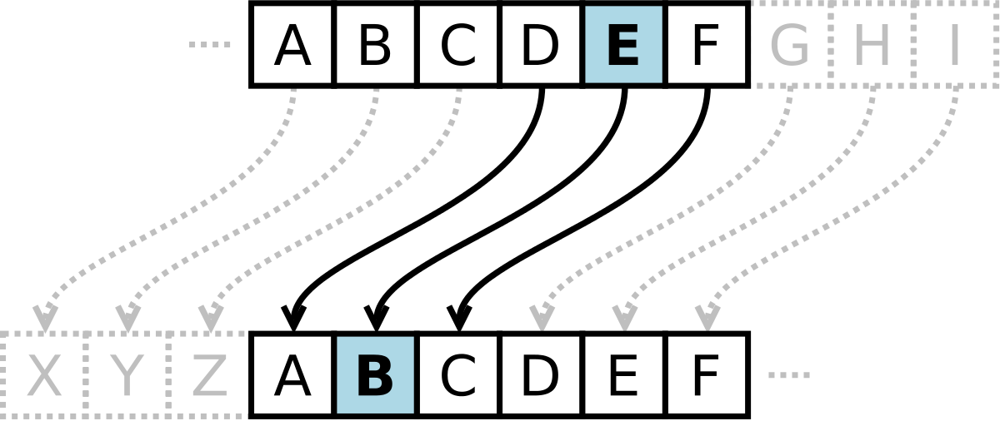

Encryption
Throughout history, war has always caused meesages to need to be encrypted. Early accounts of these include the Roman Empire during Julius Caesar's reign. There is even a cipher named after him: "Caeser Cipher". It works by having every character changed by x. For example if I want to encrypt "Hello" and shift it by 4, I would get "Lipps".

The Vigenere Cipher uses a key that is a word or string of characters that can represent how much each character in the text shifts.
For example, if I wanted to encript "hello" while using the key word of "bye", my encrypted message would be "icpmm"

The Secure Hashing Algorithm (SHA-256) is the safest way to encrypt something in the world at the moment as no computers are currently able to crack it. There are two types that it uses:
Symmetric Key Encryption
-
The same key is used for encrypting and decrypting
-
Key has to be known between devices communicating
Public Key Encryption
-
A public key for encrypting data but a private key for decrypting it
-
Is fully reliant on authentication (hash-code verification)
Image Citations:
https://infosecwriteups.com/breaking-down-sha-256-algorithm-2ce61d86f7a3,
https://en.wikipedia.org/wiki/Vigen%C3%A8re_cipher,
https://en.wikipedia.org/wiki/Caesar_cipher